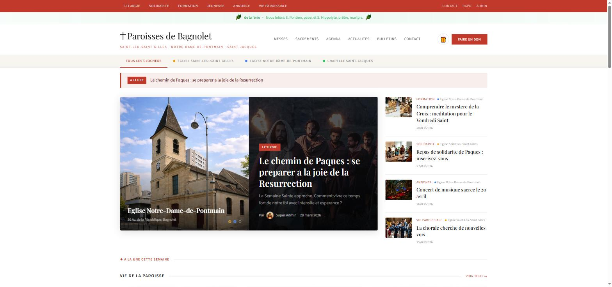
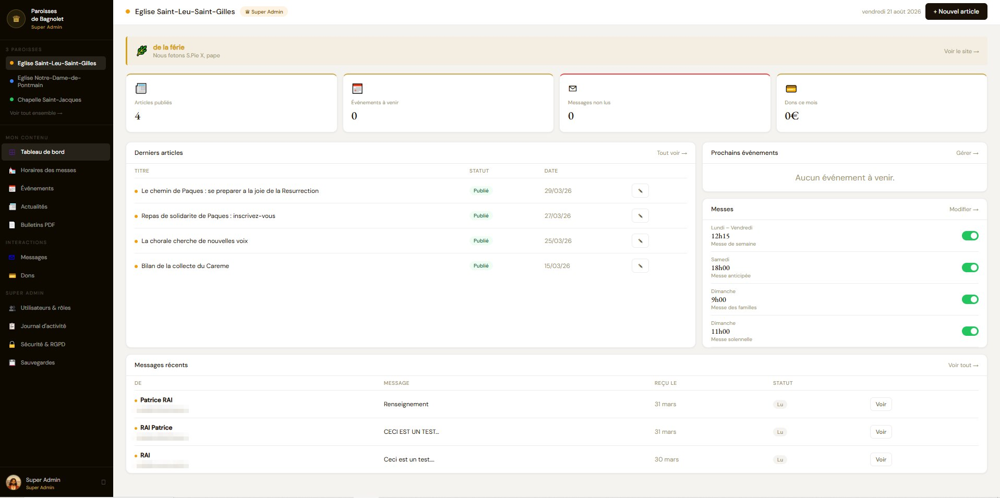
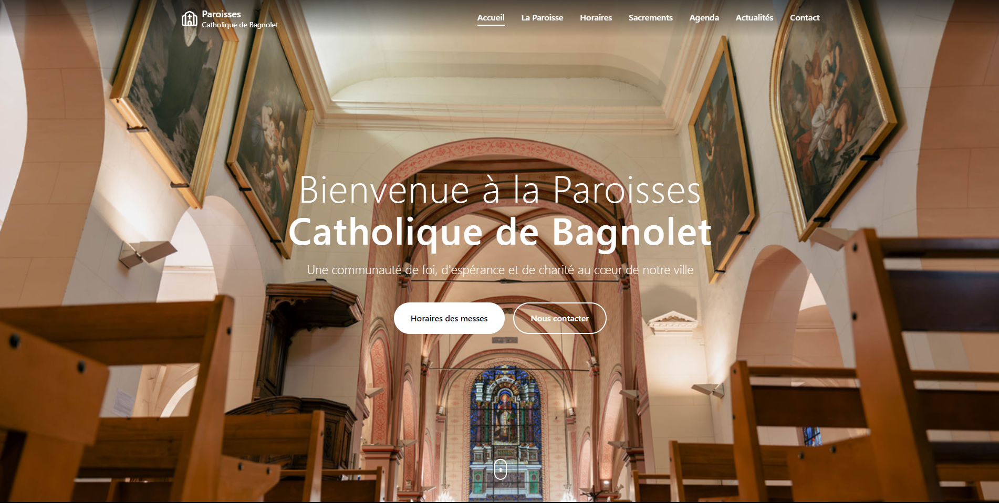

{kind=link}

{kind=link}

{kind=link}

Présentation
Cette réalisation est une plateforme web multi-sites que j’ai développée bénévolement, seul et de A à Z, pour un réseau de trois paroisses : un CMS custom en PHP/MySQL qui fait vivre trois sites publics à identité propre depuis un back-office commun. Le système offre une gestion multi-rôles, un CRUD complet sur tous les contenus et sa signature technique : un calendrier liturgique généré dynamiquement pour n’importe quelle année, les fêtes mobiles étant calculées à partir de la date de Pâques.
Objectifs, contexte, enjeux et risques
Le contexte : trois communautés voisines aux besoins proches mais aux identités distinctes, sans compétence technique en interne, et une relation de confiance née d’un premier stage effectué pour ces paroisses en 2020-2021. L’objectif : leur donner une présence web vivante et administrable en autonomie par des bénévoles non techniciens, dans le respect du RGPD. L’enjeu : que l’outil survive à son développeur. Un site associatif abandonné parce que « la personne qui s’en occupait est partie » est un scénario classique que je voulais éviter. Les risques : le développement solo (aucune revue de code, un seul cerveau sur l’architecture), le temps limité du bénévolat et la tentation permanente de la sur-ingénierie sur un projet passion.
Les étapes
D’abord, le recueil des besoins auprès des responsables paroissiaux, en traduisant un vocabulaire de vie communautaire (annonces, horaires, fêtes) en fonctionnalités concrètes. Puis la modélisation : un schéma MySQL unique servant trois sites, avec rôles, permissions et contenus mutualisés ou spécifiques. Le développement a suivi : back-office multi-rôles, CRUD complet, et l’algorithme du calendrier liturgique, c’est-à-dire le calcul de la date de Pâques et des fêtes mobiles qui en découlent, pour que le calendrier de n’importe quelle année se génère seul. Enfin : conformité RGPD (mentions, minimisation des données collectées), déploiement des trois sites avec leur identité graphique propre et formation des contributeurs de chaque communauté.
Les acteurs
Les responsables paroissiaux ont été à la fois commanditaires et premiers utilisateurs : ce sont eux qui validaient chaque choix fonctionnel. Les équipes de bénévoles contributrices administrent aujourd’hui les contenus, et les visiteurs des trois sites en sont les destinataires finaux. Côté technique, un seul acteur : j’ai été concepteur, développeur, hébergeur et formateur, c’est-à-dire l’ensemble des rôles d’un projet, assumés seul.
Les résultats
Pour le réseau paroissial : trois sites en production, mis à jour au quotidien par des bénévoles autonomes, sans intervention technique, et un calendrier liturgique toujours juste, sans saisie manuelle. Pour moi : la démonstration qu’un produit complet peut être porté seul, de la première table SQL à la formation des utilisateurs, un terrain d’application réel du RGPD et une expérience formatrice de coordination de trois communautés aux attentes différentes.
Les lendemains du projet
Dans le futur immédiat : les retours d’usage des contributeurs nourrissent des ajustements réguliers. À distance : de nouveaux modules mutualisés sont envisagés (inscriptions à des événements, lettres d’information), qui bénéficieraient aux trois sites d’un coup et justifieraient une fois de plus l’architecture commune. Aujourd’hui : la plateforme vit en production, maintenue au fil de l’eau, et sert de vitrine numérique quotidienne au réseau.
Mon regard critique
Le développement solo forge, parce que chaque problème doit trouver sa solution, mais il isole : des revues de code externes auraient élevé la qualité et remis en question certains choix d’architecture. Le choix du CMS custom, discutable en général face à WordPress, se justifiait ici précisément par le calendrier liturgique calculé et le multi-sites mutualisé ; il oblige en contrepartie à documenter sérieusement pour préparer une éventuelle relève. Enfin, ce projet m’a appris à résister à la sur-ingénierie : plusieurs fonctionnalités séduisantes ont été abandonnées parce qu’aucun utilisateur réel n’en avait besoin. La meilleure ligne de code reste souvent celle qu’on n’écrit pas.
Compétences rattachées
Les compétences que cette réalisation met en œuvre, issues de la matrice compétences ↔ réalisations du portfolio.
-
T1 — Développement web full-stack (PHP, MySQL, JavaScript) (7,5/10)
Concevoir et faire vivre des applications web complètes, de la base de données à l’interface : back-offices métier, CMS sur mesure, sites clients.
-
T2 — Conception d’architectures logicielles et modélisation de données (7/10)
Traduire un domaine métier en schémas de données et en couches applicatives sains, sur SQL Server, PostgreSQL et MySQL.
-
H1 — Autonomie et capacité d’auto-formation (8/10)
Monter seul en compétence sur un outil, un langage ou un domaine inconnu, puis transformer cet apprentissage en résultat concret.
-
H2 — Écoute et traduction des besoins métier en solutions (7,5/10)
Comprendre le problème réel derrière la demande exprimée, et le traduire en solution adaptée à des interlocuteurs non techniques.
-
H3 — Coordination et animation de collectifs (7,5/10)
Organiser l’action commune, d’une équipe projet de quatre personnes à un rassemblement d’environ 12 000 participants.
Dans la constellation du portfolio
Le schéma ci-dessous replace cette page dans la navigation circulaire du portfolio : chaque nœud est un lien cliquable.